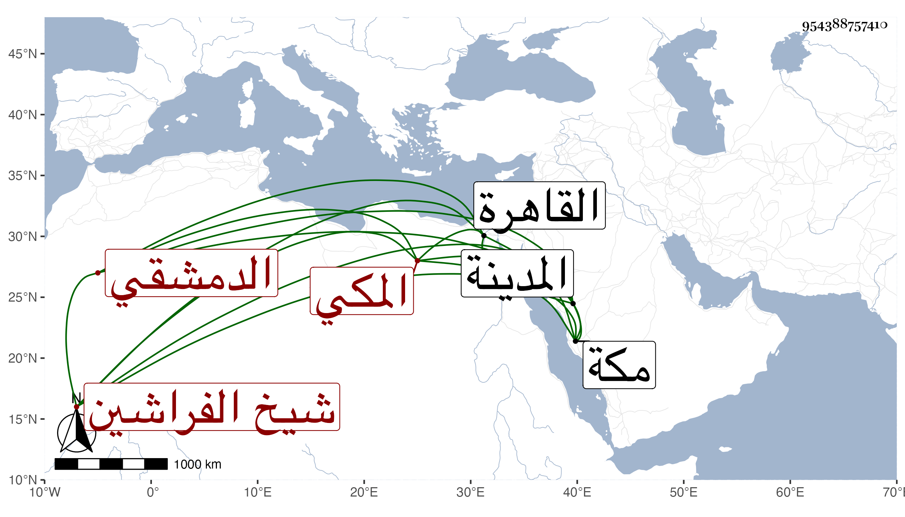

0902Sakhawi.DawLamic.ITO20230111-ara1.EIS1600.954388757410
Biography ID: 954388757410
364
عمر بن محمد بن أحمد بن عبد العزيز الدمشقي الأصل المكي المولد والدار شيخ الفراشين بها والآتي أبوه ويعرف بابن بيسق . ولد في سنة اثنتين وأربعين وثمانمائة بمكة ونشأ بها وخلف والده في المشيخة المشار إليها ولازم خدمة البرهاني القاضي حيث دخل معه القاهرة حين خطبه الأشرف قايتباي للقدوم عليه وكذا زار معه المدينة النبوية بل زارها غير مرة ، ولا بأس به أدبا مع الغرباء وقياما بوظيفته .
